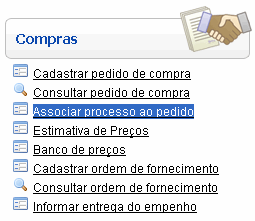
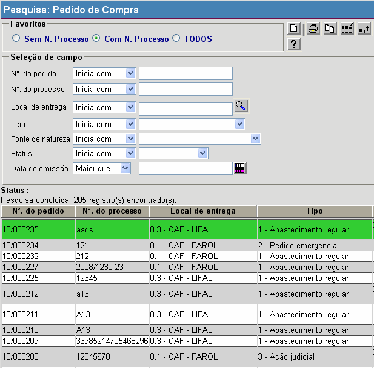
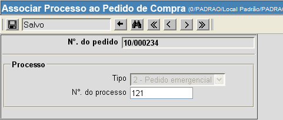

Associar Processo ao Pedido [ Voltar ]Utilize esta tela para realizar no sistema a associação de um processo a um pedido de compra. O formulário "Associar processo ao pedido" encontra-se dentro do menu "Compras". 
Ao clicar no formulário, o sistema exibirá a seguinte tela: 
Para associar um processo a um determinado pedido, siga os passos abaixo: 1º Passo: localize e selecione com um clique o pedido desejado. Se necessário, informe os caracteres iniciais do código do pedido no campo "N°. do pedido". Assim, a pesquisa entre os pedidos cadastrados será refinada para retornar apenas os registros que se iniciem com o conteúdo digitado. A seguinte tela será exibida:  2° Passo: informe, no campo "N°. do processo", o número do processo ao qual o pedido selecionado está associado. 3° Passo: em seguida, clique no botão  para salvar a
associação. para salvar a
associação.
|